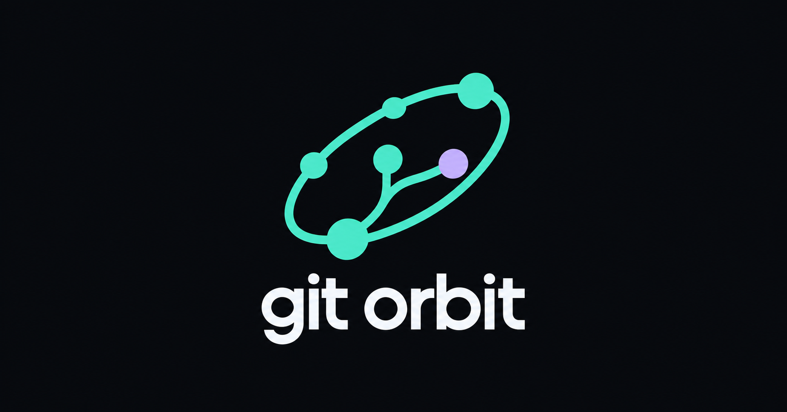

Illustrative cards using the website’s prepared sharing image and metadata.

WhatsApp may use a different card size or shorten the description, depending on the app and its cached preview.
Updated landscape image: the full orbital logo and “git orbit” wordmark stay visible, with space around every edge.